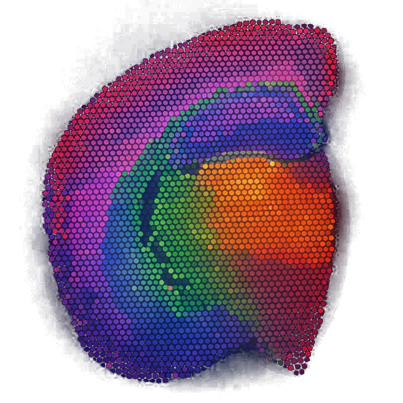
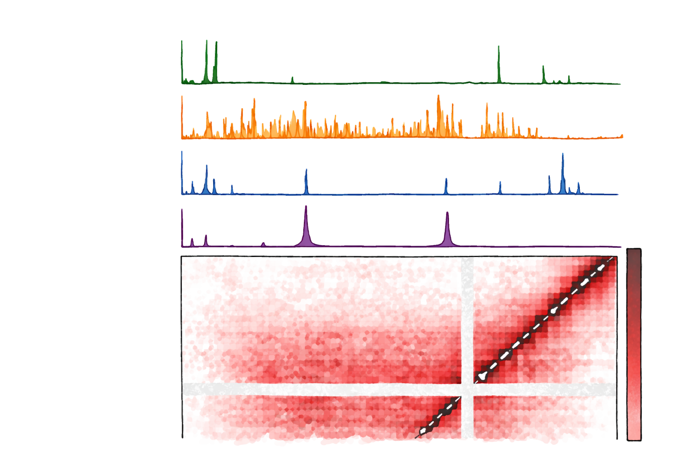

|
Computational Biology | Brown University | Gene Regulation | Spatial Omics | Machine Learning | Foundation Models
Elo is my AI-in-training assistant but would love to talk to you!
About Me
I am a 5th-year PhD candidate in Computational Biology at Brown University, advised by Dr. Ritambhara Singh and co-advised by Dr. Erica Larschan. My research focuses on computational approaches to gene regulation—specifically building machine learning models that integrate multimodal genomic data to understand how genes are controlled. I'm currently interning at MERCK as an AI/ML Modeling Research Assistant where I'm developing causal inferences for biological networks.
I completed my undergraduate degree in Computational Biology at the University of Rochester, where I worked with Drs. David Mathews and Amanda Larracuente. Outside of the lab, I enjoy cooking, community service, and learning about aquarium fish!
Updates
-
DRIFT is accepted as an ISMB Proceeding
-
T32 Fellowship is renewed
-
- Started interning at MERCK
- ISMB Travel Fellowship awarded
-
- Started interning at ScaleAI - GenAI Fellow
- Proceeding talk @ ISMB 2026
Selected Projects

DRIFT ↗
Diffusion-based Representation Integration for Foundation Models in Spatial Transcriptomics. Denoises and spatially integrates tissue data without retraining pretrained models.
Odor-associated Learning and Memory ↗
Modeling gene regulatory mechanisms in olfactory cortex and hypothalamus under different odor conditions using single-cell transcriptomics and network inference.

Synergistic Transcription Factor Control in Drosophila ↗
Multimodal modeling of Drosophila transcription factors using ChIP-seq, Micro-C, and sequence data to understand synergistic effects in gene regulation.
Publications
- Atishay Jain*, Tuan M. Pham*, David H. Laidlaw, Ying Ma, Ritambhara Singh Diffusion-based Representation Integration for Foundation Models Improves Spatial Transcriptomics Analysis. (2025) [ISMB 2026 Proceedings]
- Colin D. Baker, Tuan M. Pham, Pinar Demetci, Quang-Huy Tran, Ievgen Redko, Bjorn Sandstede, and Ritambhara Singh SCOT+: A Comprehensive Software Suite for Single-Cell Alignment Using Optimal Transport. (2025) [Bioinformatics Advances]
- Sara Zeppilli, Alonso O. Gurrola, Pinar Demetci, David H. Brann, Tuan M. Pham, Robin Attey, Noga Zilkha, et al. Single-cell genomics of the mouse olfactory cortex reveals contrasts with neocortex and ancestral signatures of cell type evolution. (2025) [Nature Neuroscience]
- Pham, Tuan M., Terrel Miffin, Hongying Sun, Kenneth K. Sharp, Xiaoyu Wang, Mingyi Zhu, Shuichi Hoshika, Raymond J. Peterson, Steven A. Benner, Jason D. Kahn, and David H. Mathews DNA Structure Design Is Improved Using an Artificially Expanded Alphabet of Base Pairs Including Loop and Mismatch Thermodynamic Parameters. (2023) [ACS Synthetic Biology]
- James A Kentro, Gunjan Singh,Tuan M Pham , Justin Currie, Saniya Khullar, Audrey T Medeiros, Maria Tsiarli, Erica Larschan, Kate M O'Connor-Giles Conserved transcription factors coordinate synaptic gene expression through repression. (2025) [bioRxiv]
- Zachary S. Warner, Sherif Negm, Patrick Wynn, Tuan Pham, Lorraine Zaki, Gilbert Giri, Paul B. Frandsen, Amanda M. Larracuente, and John S. Sproul Satellite DNA dynamics across phylogenetic scales in ground beetles and other insects. [bioRxiv]
- Jabale Rahmat, Tuan Pham, and Amanda M. Larracuente kmerRRR: A k-mer based tool for functional genomics in Repeat Rich Regions. [bioRxiv]